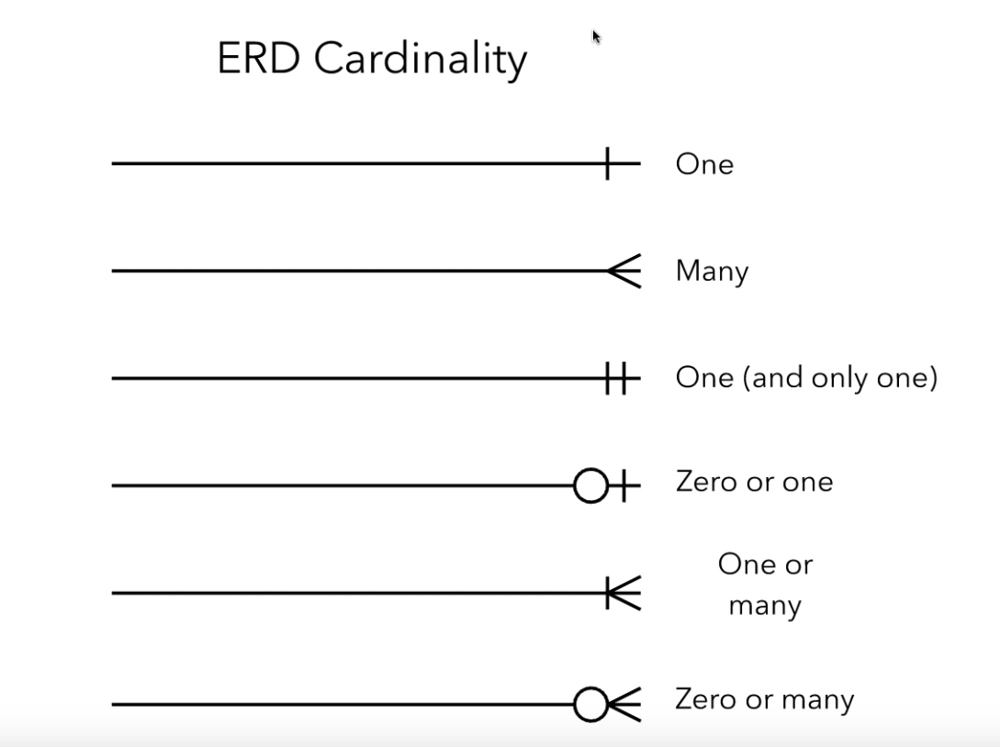

In an entity relationship diagram (ERD), we have the following objects:
- Relations (diamond)
- Entity (circle)
- Relationships (line connectors or cardinality)
Cardinality
- One
- Test
- Many
- Test
- One (and only one)
Entity is related to only one of the other entity.
\[ F(x) \neq G(y) \quad x \neq y \]
- Zero or one
- Entity is related to one or none of the other entity.
- One or many
- Entity is related to at least one of the other entity.
- Zero or many
- Entity is related to a nonnegative number of the other entity.
